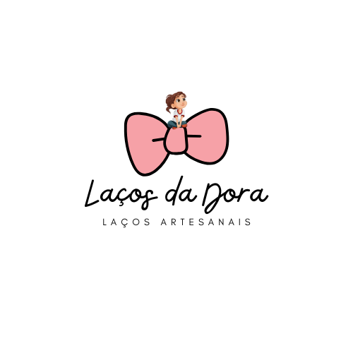
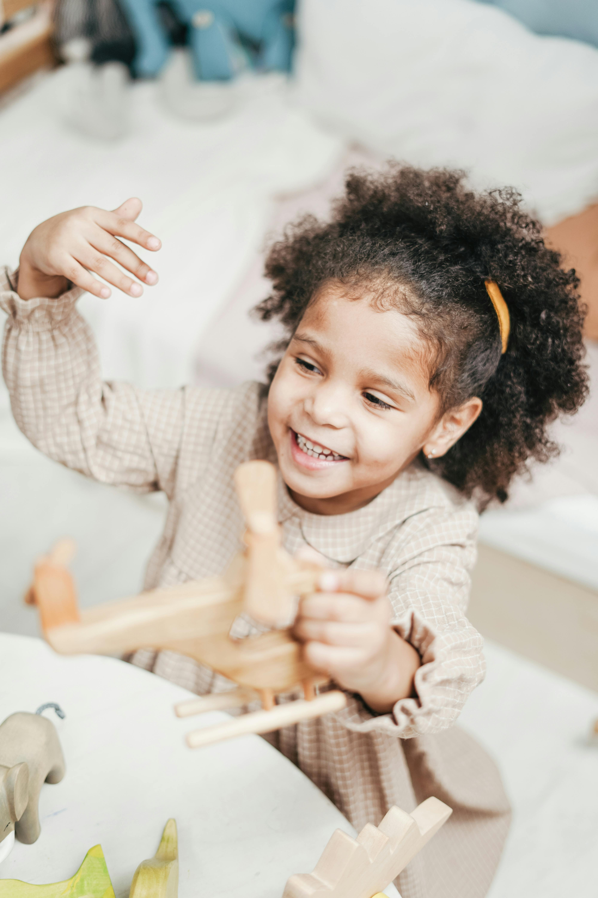
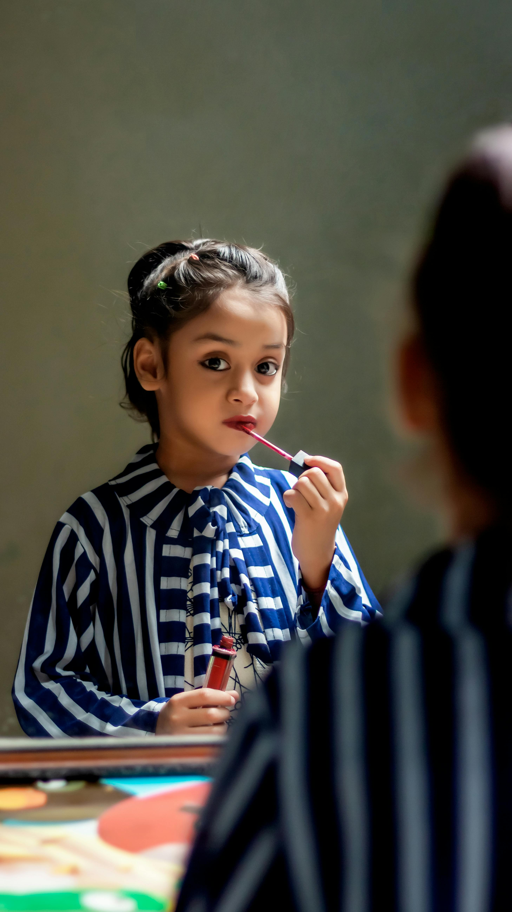

Descubra nossas coleções exclusivas de acessórios feitos para realçar o que há de mais bonito. Produtos artesanais pensados para você e para quem você ama.
Ver Nossos ProdutosConheça os modelos perfeitos para cada fase e estilo
Delicadeza e conforto extremo. Feitos para não apertar ou machucar a cabecinha sensível dos bebês.

Conforto e praticidade para todos os momentos. Perfeitos para o dia a dia, escola e brincadeiras, sem apertar ou incomodar.

Elegância e charme em cada detalhe. Ideais para festas, eventos e looks que pedem um toque especial.
Acreditamos que cada pessoa é única, e seus acessórios também devem ser. Todos os nossos produtos são 100% artesanais, produzidos manualmente com matérias-primas selecionadas e muito carinho em cada ponto e laçada.
Trabalhamos sob encomenda para garantir que você receba uma peça feita especialmente para o seu gosto, nas cores e acabamentos que desejar.
Faça sua Encomenda via WhatsApp